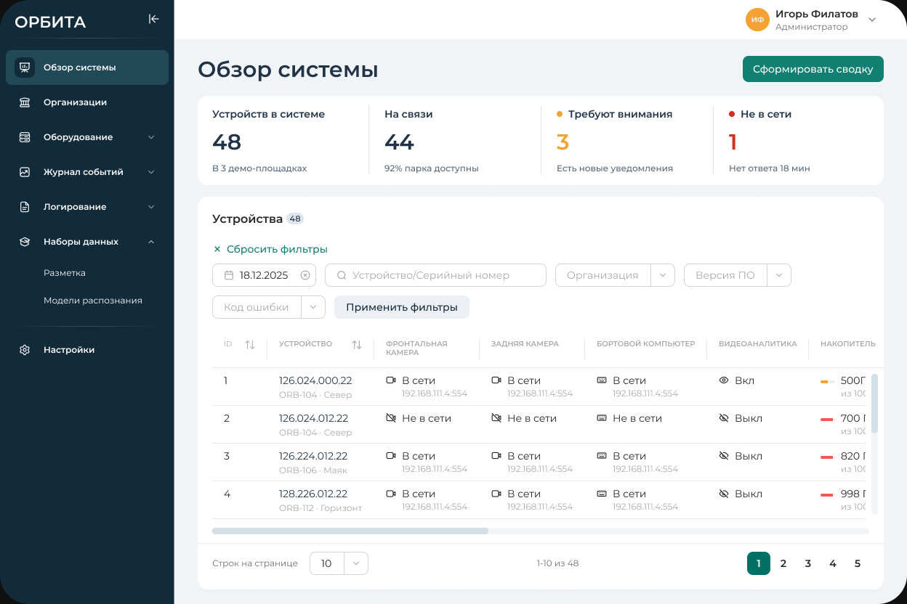
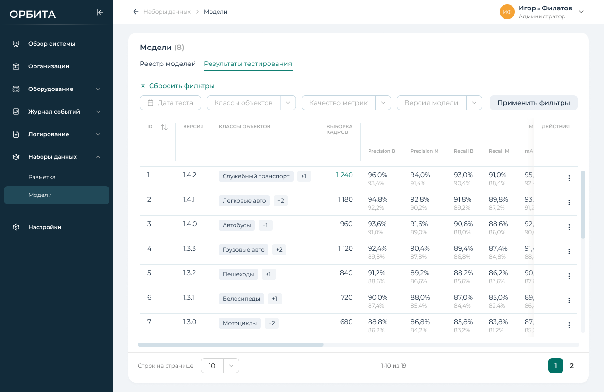

Интерфейс управления оборудованием системы автоматического выявления препятствий при движении общественного транспорта.
Роль · UX/UI DesignerПлатформы · WebB2B
*ОРБИТА — условное название интерфейса мониторинга. Рабочий проект находится под NDA; визуальный стиль переработан для портфолио.

MacBook Pro
01 · Моя роль и задача
Сделать сложные данные понятными для работы
Моя роль — доработка интерфейса
Моя задача — упорядочить большой объём технических данных: выделить главное, сделать статусы оборудования понятными и выстроить переход от общего обзора к диагностике устройства. Интерфейс нужно было адаптировать под ширины 1280, 1400 и 1920 px, сохранив читаемость таблиц и доступность действий.
02 · Обзор состояния
Увидеть, что требует внимания
Сводка показывает доступность оборудования и состояния, требующие внимания. Таблица ниже позволяет сопоставить устройства и выбрать нужное для дальнейшей аналитики.
Общая картина → устройство → подробности
Сначала специалист оценивает состояние системы, затем находит устройство в таблице. Цветовые акценты выделяют проблемы, а текстовые статусы объясняют состояние.
Прокрутка и пагинация
Большие таблицы можно прокручивать, а записи — просматривать постранично. Это позволяет работать с большим объёмом данных, сохраняя читаемый размер текста.
Фильтры — по кнопке
Из-за ограничения разработки результаты не могли обновляться при каждом выборе. Поэтому пользователь сначала задаёт нужные параметры, затем нажимает «Применить» — весь набор фильтров применяется за один раз.

Выбор фильтров → обновление таблицы → горизонтальная прокрутка → действие «Удалить» и окно подтверждения.
03 · Диагностика устройства
Разобраться в состоянии конкретного устройства
Карточка объединяет сведения об устройстве, состояния компонентов и события. Сообщение о сбое выделено отдельно и направляет к журналу для проверки подробностей.
Состояние компонентов и события рядом
Камеры, бортовой компьютер, видеоаналитика и хранилище представлены отдельными строками. События, видео и лог-файлы собраны во вкладки, чтобы сохранить контекст устройства.
04 · Администрирование
Управлять пользователями и доступом к системе
Организация, роль и доступ пользователя определяют его место в системе. Один экран показывает общую логику работы с учётными записями.
Знакомая структура для административных задач
Поиск, фильтры и действия в строках повторяют логику реестра оборудования. Вкладки разделяют пользователей, роли и права.
05 · Работа над версией для портфолио
Сделать состояния и порядок действий яснее
При подготовке кейса переработаны визуальная иерархия, представление статусов и компоновка карточки устройства. Основной сценарий показан последовательно: обзор → поиск → диагностика.
В кейсе показана логика проектных решений, без количественных оценок влияния на скорость работы.